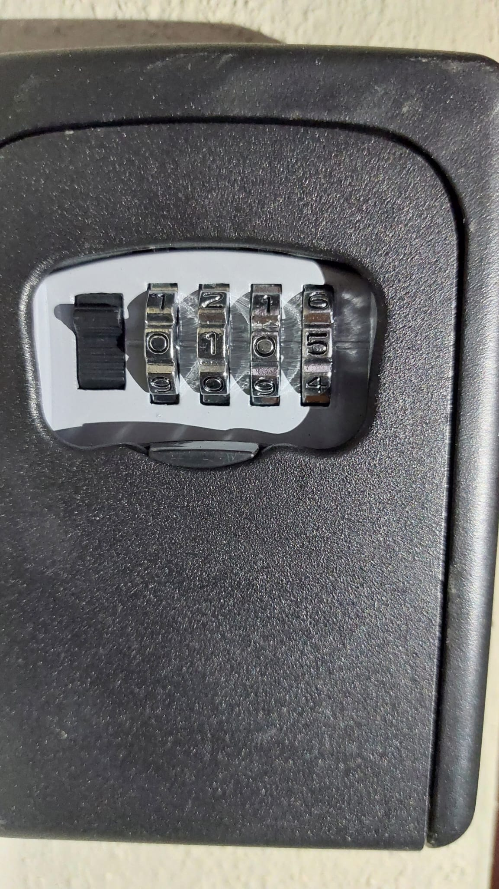

Il video qui sopra mostra come raggiungere l'ingresso corretto della casa.
Porta d'ingresso
In questo video viene mostrato qual è la porta d'ingresso dell'appartamento e la psizione della cassetta di sicurezza che contiene le chiavi dell'abitazione.

Come mostrato in foto, il codice è 0105.
Raccolta differenziata
Dovrete assolutamente effettuare la raccolta differenziata.
Solo dopo l’ora di cena dovrete lasciare i cestini con la spazzatura corretta all'esterno vicino al ciglio della strada, e la mattina passeranno gli operatori ecologici per ritirare l'immondizia.
Quando gli operatori avranno finito di prelevare la spazzatura potrete portare in casa il cestino.
Al check out dovrete portar via tutta la spazzatura (che non sarà prelevata dagli operatori ecologici) e dovrete dirigervi al centro ecologico locale di cui vi forniamo la posizione.
Orari di apertura
Mattina
Dal Lunedi alla Domenica
Dalle ore 8.30 - alle ore 13.00
Pomeriggio
Aperto il Lunedì, Mercoledì e Venerdì
Dalle ore 17.00 - alle ore 19.30.
Dal 1 Giugno fino al 30 Settembre attivo tutti i giorni, dal Lunedì al Sabato, dalle ore 08,30 alle ore 12,30,
un info-point informativo in Via Roma 2/b (c/o la sala conferenze della Pro Loco, adiacente l'edicola di Castelsardo),
per acquisire informazioni sullo svolgimento del servizio, richiedere prenotazioni per ritiri, effettuare segnalazioni,
esporre reclami e ricevere ogni altra informazione utile per un migliore funzionamento del servizio.
Così come sono attivi il numero verde 800.592890 (gratuito anche da cellulare), un numero di cellulare attivo anche tramite l'app. WhatsApp: 340.6223430
oltre al numero di telefono dell'Ecocentro: 079.471480.
Si invitano, allo stesso tempo, tutti gli utenti a scaricare sul proprio smartphone, l'App gratuita ''Junker'',
disponibile per iOS ed Android dove si potrà seguire giornalmente il calendario ed essere costantemente informati,
riescendo ad ottenere nel contempo un valido aiuto per effettuare correttamente la raccolta differenziata.